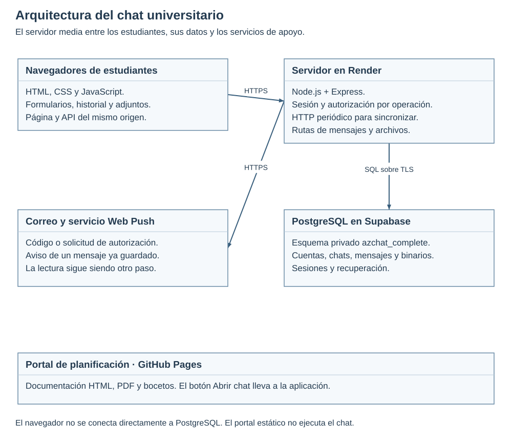
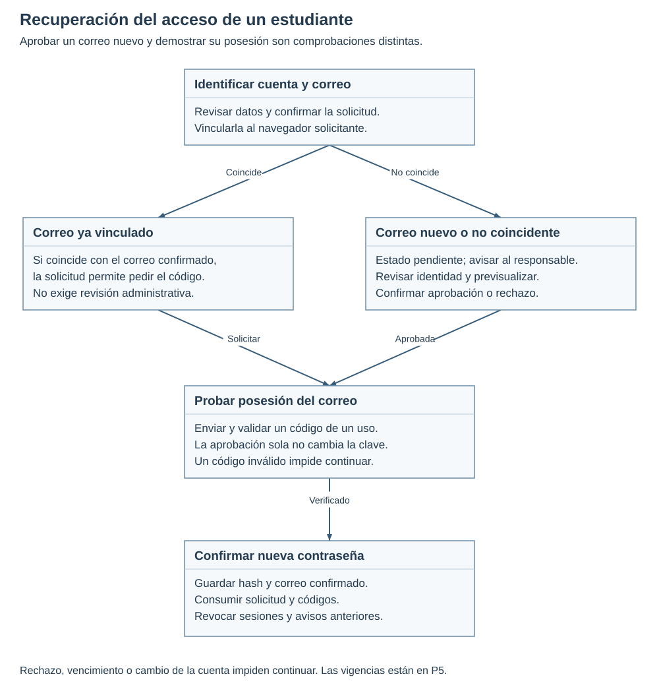

Paso 9 de 12 · Arquitectura y capas
Cómo se conectan sus partes
La relación entre el navegador, el servidor y la base de datos.
Implementación de la arquitectura
En Complete 2.9 la presentación utiliza HTML, CSS y JavaScript; Node.js con Express atiende las rutas HTTP; el módulo pg conecta el servidor con PostgreSQL alojado en Supabase. La autenticación y las sesiones las administra AzChat, no el servicio Supabase Auth. Las novedades se consultan periódicamente con Fetch, sin Socket.IO en Complete.
Render aloja el servidor y GitHub privado conserva su código. Google Cloud configura el acceso OAuth 2.0 y Gmail API envía desde la cuenta autorizada del responsable. Esta API recibe la petición del servidor; las credenciales de correo no se envían al navegador. El paso 12 explica el proceso completo.
Arquitectura cliente servidor
Los estudiantes abren la aplicación desde sus navegadores. Una única aplicación Node.js con Express entrega los archivos de interfaz y atiende la API. PostgreSQL administrado en Supabase conserva los datos; el servidor se ubica en Render. GitHub Pages entrega únicamente la documentación y los bocetos.


Ampliar diagramaCapas y límites de confianza
| Capa | Decisión |
|---|---|
| Presentación | HTML, CSS y JavaScript sin un framework de componentes obligatorio. Web y API comparten origen. |
| Aplicación | Reglas y permisos centralizados en Express. Sesiones con express-session y connect-pg-simple; contraseñas con Argon2id. |
| Persistencia | Acceso mediante pg y pool pequeño. Esquema azchat_complete independiente; consultas parametrizadas y TLS con validación de certificado. |
| Servicios de apoyo | Proveedor de correo por HTTPS y Web Push invocados desde el servidor. La autorización sigue siendo responsabilidad de AzChat. |
Protección del acceso
La cookie contiene un identificador firmado; los datos de sesión están en PostgreSQL. Se regenera al ingresar y usa HttpOnly, SameSite=Lax y Secure en producción. El servidor comprueba el vencimiento absoluto definido en P5 y el origen de las operaciones que modifican datos.
Las credenciales de PostgreSQL, el secreto de sesión y las claves de correo y push pertenecen a configuración privada del servidor. El esquema no debe exponerse a roles públicos de Supabase; RLS complementa la separación. La autorización por estudiante y conversación se aplica en Express. El diseño usa PostgreSQL de Supabase, sin depender de Supabase Auth, Realtime ni un bucket público para archivos.
Recuperación de una cuenta estudiantil


Ampliar diagramaEl desafío se vincula al propósito, al navegador y, cuando corresponde, a la cuenta y a su solicitud. Se guarda un HMAC del código, no el código en claro. El servidor bloquea los registros durante la verificación y conserva los intentos incorrectos.
Para un correo no coincidente, el responsable debe contrastar la identidad por un medio conocido antes de decidir. El enlace abre una previsualización y luego exige confirmación. Al completar el restablecimiento se consume la solicitud, se invalidan las demás y se revocan sesiones y suscripciones anteriores.
Alojamiento y operación
El despliegue necesita las dependencias fijadas, el esquema preparado y la configuración privada. El servidor escucha el puerto del entorno y expone /salud, que verifica una consulta simple a la base. Este endpoint comprueba disponibilidad básica, no todas las funciones del chat.
Un alojamiento con suspensión por inactividad puede requerir espera al arrancar. La evaluación debe separar esa espera de la respuesta con servidor activo. Instalar la web añade un acceso en el dispositivo y permite avisos compatibles; el service worker no mantiene una copia del historial ni una cola de envío sin conexión.
Documentos y modelos
Consultar la documentación completa en PDF. Esta página y el documento del paso describen el mismo diseño del sistema.
Actualización 2.11 por solicitud de usuarios
Se conserva Express, PostgreSQL y JavaScript sin frameworks. anuncios.js del servidor concentra las rutas; publico/anuncios.js y anuncios.css implementan el listado, perfiles y comentarios. anuncios.sql es una ampliación aditiva. El registro valida el catálogo en el servidor. La escuela predeterminada de la base mantiene compatibilidad durante el despliegue, pero la API actual exige selección explícita.
Consultar la solicitud, las decisiones y los criterios de aceptación.